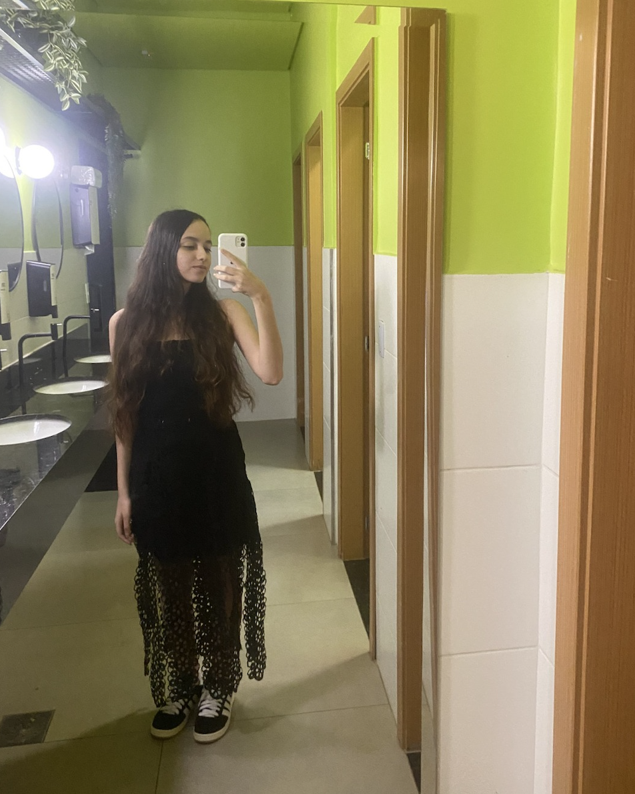

Vitório: Desenvolvedor Mobile - Desenvolvedor mobile focado em criar aplicativos intuitivos e otimizados, tanto para sistemas Android, quanto para IOS. Sempre buscando a melhor experiência para o usuário.

Yuri: Desenvolvedor de Jogos - Desenvolvedor de jogos que adora criar experiências imersivas e divertidas. Especializado na parte do design dos jogos, também atua na programação e otimização de jogos para diversas plataformas.

Isabelly: Desenvolvedora Full Stack - Desenvolvedora renomada com diversas habilidades em muitas linguagens, como Python, CSS, HTML, Java e outras. Atua tanto no front-end quanto no back-end. Possui olhar crítico e desafiador, buscando sempre evoluir.

Kerem: Engenheira de Software - Ótima engenheira de software com anos de experiência no mercado. Trabalha com diversas linguagens, como Java, Python, HTML e outras. Também possui um olhar crítico e analítico para a situação, enfrentando os desafios complexos de modo criativo.

Leonardo: Analista de Sistemas - Analista com muita experiência no desenvolvimento, otimização e soluções para sistemas complexos. Especialista em análise de requisitos, resolve os problemas de maneira criativa e inovadora.